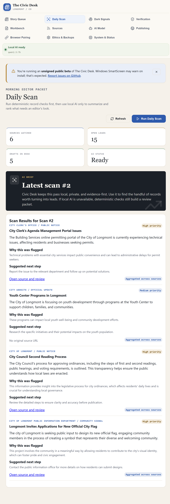
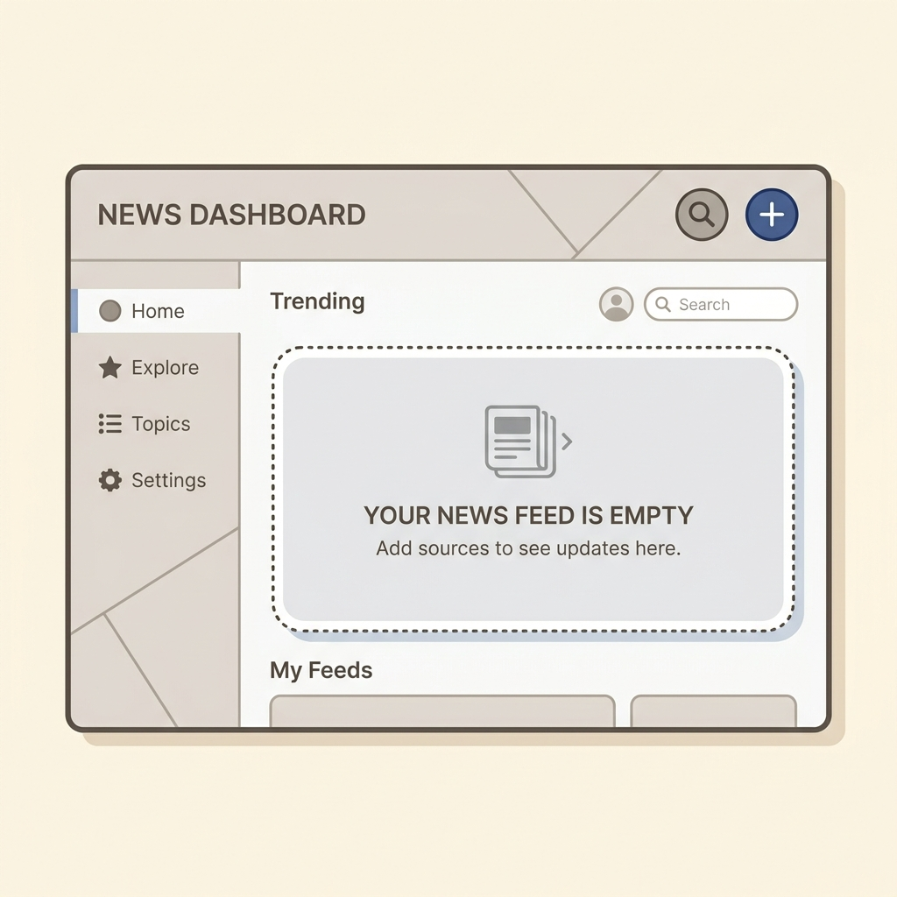

Find signals
Scan official sources, public local media, documents, feeds, and public community spaces. Search is a fallback, not the only discovery strategy.
Public beta for local civic publishers
The Civic Desk helps one person or a small newsroom monitor public sources, surface civic leads, draft from evidence, review risks, and publish a static issue. The app assists. The editor decides.

Small towns still have council packets, zoning changes, police controversies, land deals, public notices, school-board decisions, and community rumors that deserve attention. The Civic Desk is built to reduce the routine digging so a human editor can spend time on judgment, verification, interviews, and publication.
Scan official sources, public local media, documents, feeds, and public community spaces. Search is a fallback, not the only discovery strategy.
Leads stay tied to source records, evidence, entities, verification tasks, and editorial status. The system should explain why something matters.
Guardrails and press-freedom review can flag sourcing, defamation, privacy, and quality risks. They do not replace the editor.
The newsroom loop
The app is not a magic article machine. It is a local newsroom desk that helps a person move through the whole cycle.
Add official city pages, public notices, local media, public social/community sources, spreadsheets, documents, and source lists. PDF import is disabled in the public beta until hardened parsing is available.
Fetch sources, detect changes and civic observations, extract entities, dedupe overlapping leads, and rank items for human review.
Use local AI when available, then rewrite. Workbench supports review, approval, hold, send-back, advisory guardrails, and source checks.
Compile a static issue, export a ZIP, publish with here.now anonymous preview by default, and generate share copy. Durable archives use your own credentialed connector and should be verified for the release.
Recommended default
Publish instantly from the app. Anonymous previews are useful for testing; account/API-key publishing is the path for permanent here.now sites.
Durable archive
Use a public repository-backed archive when a publisher wants long-term public history and versioned static files.
Technical hosting
Use Netlify through its token connector, or export the folder/ZIP and deploy manually to Cloudflare Pages.
Distribution
The paper should have a canonical website first. Newsletter, Substack, Facebook, Reddit, Nextdoor, and short blurbs help residents find it.
Publishing model
The Civic Desk compiles a flat HTML paper and a ZIP package. That means the output can be reviewed, archived, moved, hosted, or republished without locking the publisher into one platform.
Human judgment stays central
The Civic Desk can warn about weak sourcing, evergreen filler, reporter-note scaffolding, legal risk, and missing verification. It can rank and explain. It should not hide a lead from the editor or silently make the news judgment, but visible static-package integrity blockers stop approval/export until broken public output is repaired.

Get the public beta
Use the Windows `.exe` installer from the v0.3.2 release and verify it against `SHA256SUMS` before opening it. The beta is unsigned, so Windows SmartScreen may show an unknown-publisher warning. If the hash matches, click More info, then Run anyway.
Use the `.exe` installer. This is the only supported public-beta installer path for v0.3.2. SHA256: E75859477EC5794D9FF2006F68344E4222D1EB3EDB5457C542C2ABB1D45E16A8. SmartScreen warnings are expected for this unsigned beta; click More info, then Run anyway after verifying the file came from this release.
Planned, but not a supported public-beta installer path until clean-machine proof and platform notes are recorded.
View backlogPlanned, but not a supported public-beta installer path until a VM or clean-machine proof is recorded.
View backlog